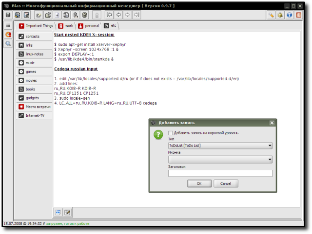

JGLooksSkin - аддон предоставляемый Р. Касьяненко, автором приложения Bias.
Аддон использует "тему" JGoodies Looks Look-&-Feel для Java/Swing-приложений, предоставляемую JGoodies - компанией специализирующейся на разработке програмного обеспечения а также консультировании в данной области и дизайне.
Предварительный просмотр:
